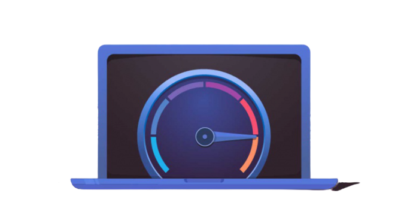

¿Ques es JIMP?
JIMP es un sitio web dinamico y facil de usar
donde pueden descargar musica de
cualquir
tipo
dentro del genero de no copyrigh
y juegos de distintos tipos de manera gratuita,
asi que
esperas
ven y descarga juegos en JIMP
¿Por que usar JIMP?

Por que JIMP te da velocidad de respuesta rapidas
sus productos son muy bueno y sus
descargas
son de mediafire y haci no batallas con el limite de
descargar de mega por eso
desbbes utiliza JIMP.
Nuesto Producto
Nosotros somos un grpo de personas
que suvimos juegos y musica de manerea gratis
para
que
disfruten y puedan encontrar juegos
de distintos generos y musica de genero electro.